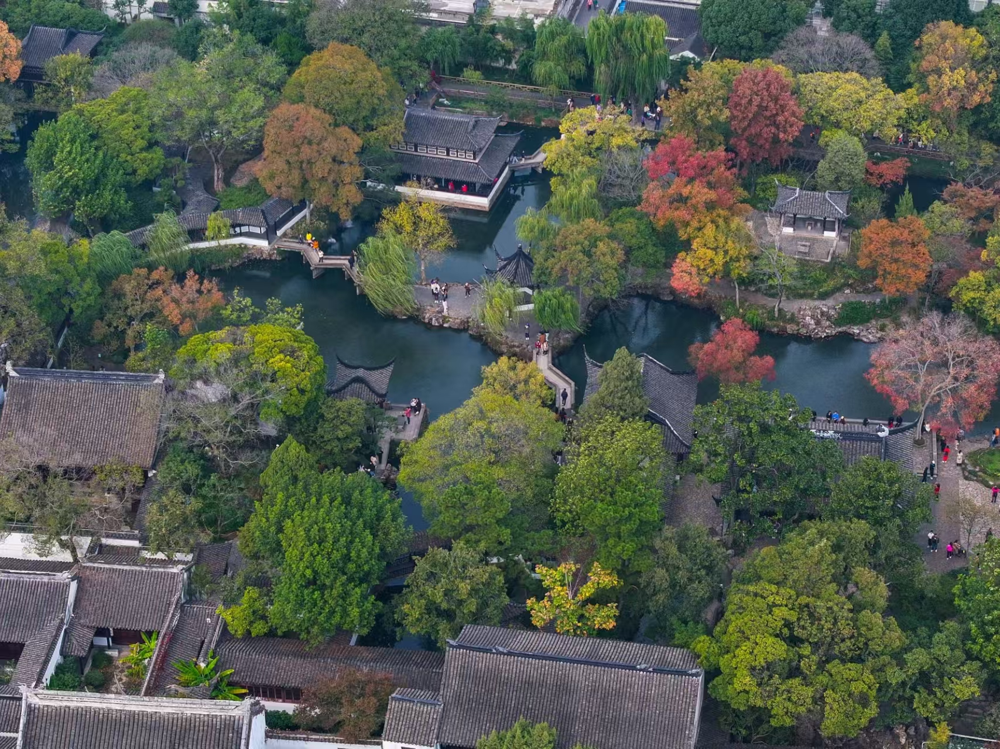
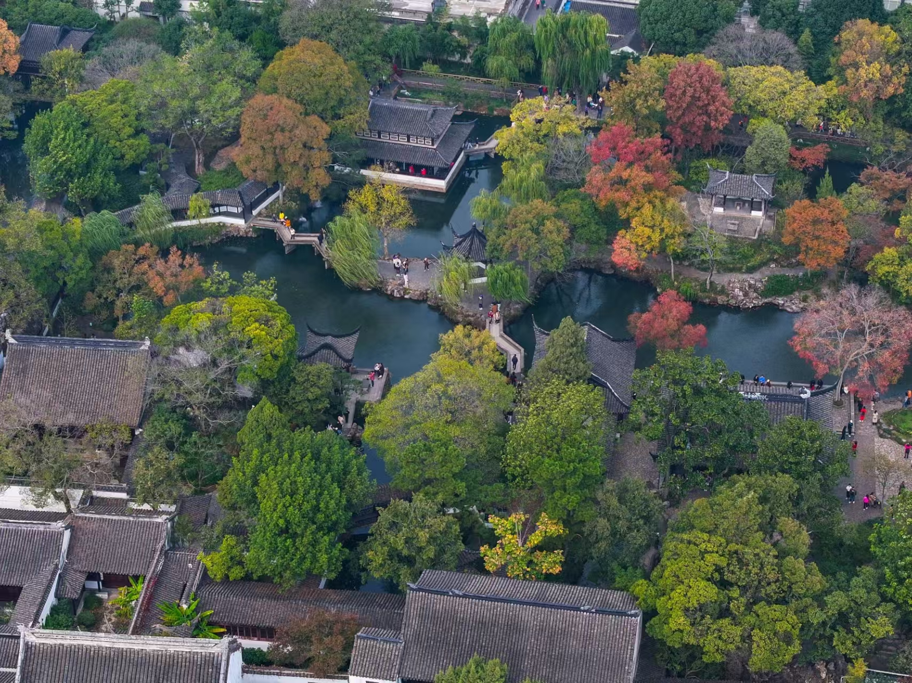

江苏
江苏，简称 “苏”，省会为南京，是中华人民共和国省级行政区。这里不仅是中国古代文明的发祥地之一，更是在岁月的长河中，凭借其独特的地理位置、丰富的自然资源、深厚的文化底蕴以及蓬勃的经济发展，成为了一颗闪耀在华夏大地东部沿海的璀璨明珠。
地理江苏
地形地貌
平原大省
平原占比68.8%，居全国首位，黄淮平原坦荡如砥，长江三角洲阡陌纵横。
水文奇观
江河湖海
长江横贯433公里，京杭大运河纵贯690公里，太湖、洪泽湖位列中国五大淡水湖。
气候特征
四季分明
亚热带向暖温带过渡气候，春秋温婉，夏冬分明。
文化江苏
苏绣
中国四大名绣之一，以针法精细、色彩鲜艳、图案秀丽而著称，作品多以花鸟、人物为题材，具有很高的艺术价值和观赏价值。
园林
江苏园林历史悠久，起于春秋，盛于明清。以叠山理水、精巧建筑布局著称，融自然与人文于一体，是东方园林艺术典范。
昆曲
昆曲源于元末昆山，为中国古老戏曲剧种。其唱腔婉转，表演细腻，融合唱念做打，经典剧目众多，被誉为 “百戏之祖”，是珍贵的非物质文化遗产。
旅行江苏
江苏，是历史与现代交织的旅行胜地。在南京，明城墙诉说岁月沧桑，秦淮河畔尽显诗意；苏州园林精巧雅致，尽显东方美学。无锡太湖风光旖旎，鼋头渚樱花如云似霞。现代都市中，苏州工业园区、南京新街口活力四射，满足多元旅行需求。
 

谭旺
学生
好好学习 天天向上